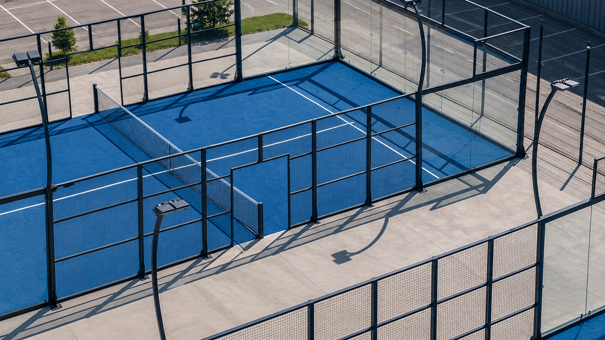
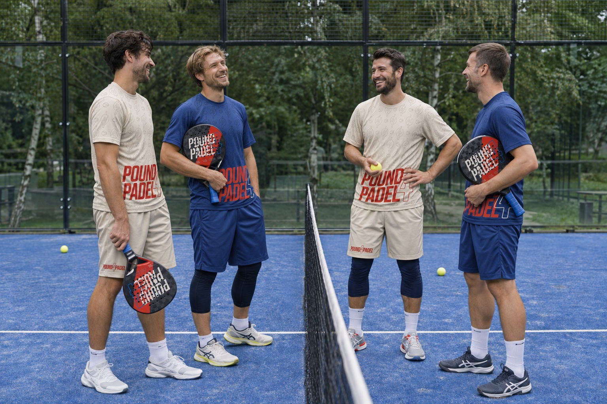
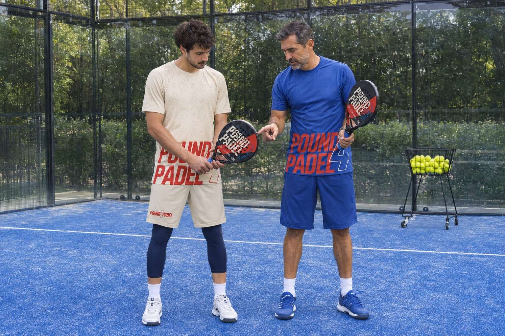

Встречи на корте
Падел - повод встретиться с друзьями и познакомиться с людьми, которым близка игра. Фотографии клуба можно открыть и рассмотреть в галерее.
Падел в Махачкале. Игра, встречи и люди, ради которых возвращаешься.
Турниры, встречи и люди,
ради которых возвращаешься.
Первый удар или новый вызов.
Начни в своём темпе.



Познакомься с правилами, почувствуй ракетку и попробуй первый розыгрыш. Опыт в теннисе не обязателен.
Что взять на кортСоберите компанию, разделитесь на пары и устройте матч. Хороший повод встретиться и договориться о следующей игре.
О записи на кортРазберите хват, подачу и движение у сетки вместе с тренером. От первых уверенных ударов до осмысленной игры в паре.
О тренировкахПадел - повод встретиться с друзьями и познакомиться с людьми, которым близка игра. Фотографии клуба можно открыть и рассмотреть в галерее.
На сайте собраны фотографии встреч и награждений. Даты следующих турниров, формат участия и условия регистрации нужно уточнять у клуба.
Пятница в POUND4PADEL посвящена женскому дню. Подробности формата и подготовка к посещению - на отдельной странице. О женском дне
Самое нужное для старта.
Ракеточный спорт, в который обычно играют парами. Корт окружён стенами, и отскок от них может продолжить розыгрыш. Ракетка цельная, с отверстиями, без струн.
Удобную спортивную одежду, обувь для корта и воду. Условия аренды ракеток и инвентаря уточняйте у клуба.
Да. Начните со знакомства с правилами, простых подач и спокойных розыгрышей. Для первой игры важнее почувствовать мяч, чем освоить все удары.
Онлайн-запись в этой версии сайта пока не подключена. Расписание, стоимость и доступное время нужно уточнить у клуба.
Выбери свой формат игры.
Онлайн-запись на сайте
пока не подключена.